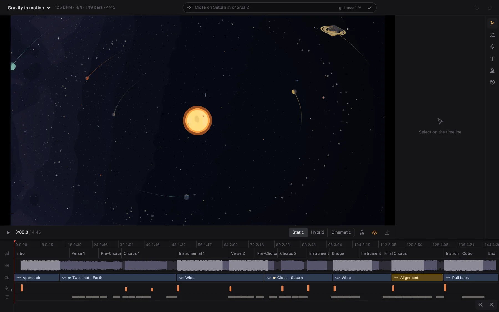

A music video
for any song.
Give it a track. It draws the whole song as a solar system, live.
First, it listens.
The whole song, before a frame is drawn. Every kick, every note, every syllable, timed to the millisecond.
Then everything moves.
The kick pulls the orbits. The bass charges the Sun. The words arrive as they are sung.
Three cameras.
One song.
Switch while it plays.
Then direct it
yourself.
Change a shot. Move a moment. Or just ask.

By hand.Shots, moments and words sit on one timeline. Drag them. The video follows in about a second.
By asking.Say it in words. A model on your own Mac proposes the change, and you decide.
To keep.Export in 1080p at 60 frames a second, with the words burned in.
Free. Open.
On your Mac.
No account, no uploads, no keys. Everything runs where your music is.
The install is about 2 GB, plus free models it asks before fetching. A song takes a few minutes to prepare.